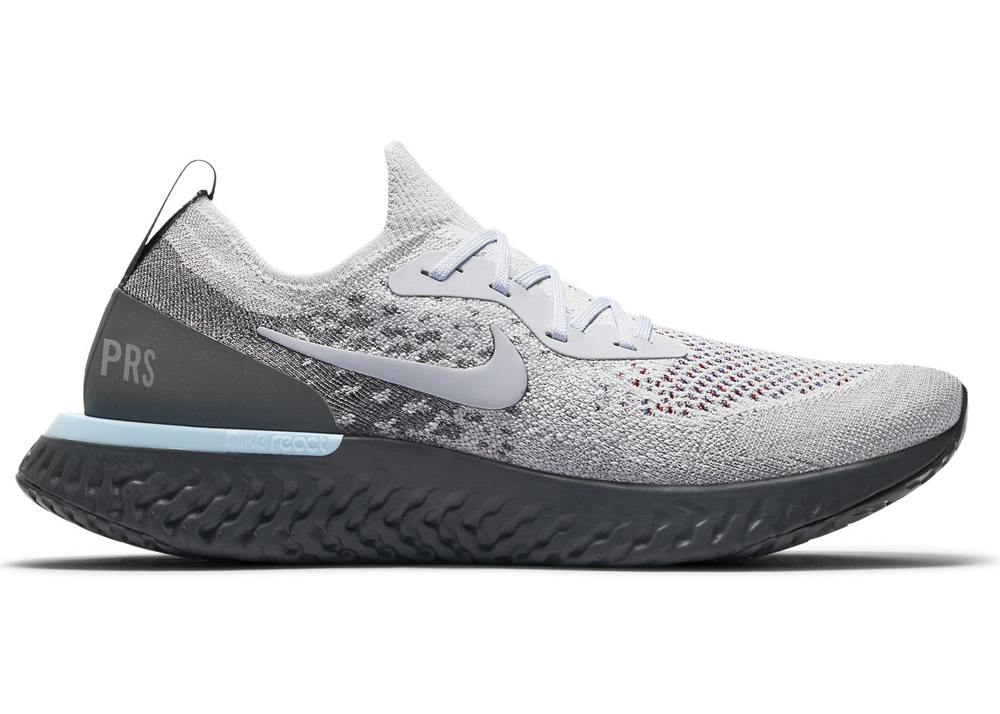
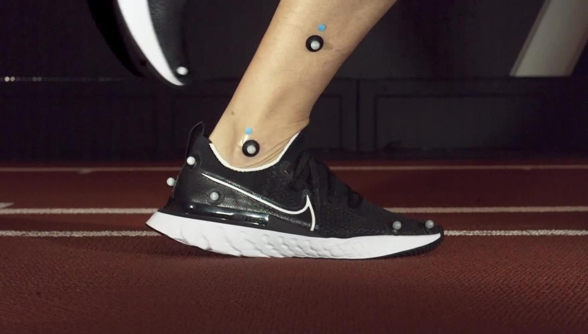
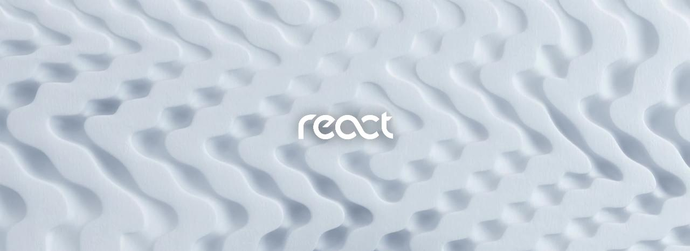

Nike React Foam
Nike React foam is nothing short of revolutionary, thanks to its ability to be incredibly responsive and soft. Now, we’re using it to help reach our newest goal: To reduce running-related injuries. And The Nike React Infinity Run, which was designed to help reduce injuries, is the first step toward that north star. With 24% more React foam than Nike Epic React Flyknit 2, it has a wider base to provide more stability and a distinct “rocker” shape to roll you through a fluid foot strike. Scroll to learn more about what makes React foam so unique.
It’s Incredibly Versatile
When we released our first shoe with Nike React foam in June 2017, we knew it was groundbreaking. But no one at Nike could have predicted how versatile React foam would prove. You can find it now in shoes that range from basketball and running to golf and training. It even adds more comfort to our most stylish sportswear shoes.
Our Most Complete Foam
Responsive. Durable. Soft. Lightweight. “Historically, cushioning innovations might deliver big leaps in one or maybe two aspects of performance,” says Nike’s Ernest Kim, Advanced Director, Global Running Footwear. “But with Nike React, we see significant advancements in all dimensions of cushioning: impact attenuation, energy return, lightweight, and durability. That’s why we call it our most complete foam ever.”
Seriously Durable
A tricky thing about foam: It’s very rare that you get cushioning that’s soft and durable. It’s usually one or the other because those qualities are opposites. But Nike React technology is different. It stayed strong and soft after serious machine testing that mimicked the forces of longtime use.
Lightweight and Soft
We figured out a way for this foam to be soft, but not at the expense of being heavy. We combined polymers—Thermoplastic elastomers (TPE) and Ethylene Vinyl Acetate (EVA)—to achieve this truly special effect.